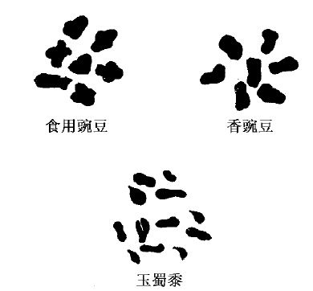

连锁群数目与基因对数
遗传理论证明遗传要素连锁成群，而且有一个例子，已经确定连锁群的数目一定不变；其他几种生物也可能如此。果蝇只有四群连锁性状和四对染色体。香豌豆有七对染色体（图24），Punnett发现大致有七个独立对的孟德尔式性状。White报道食用豌豆也有七对染色体（图24）和七个独立对染色体，也发现了几群连锁基因。

图24 减数分裂后的染色体数值。食用豌豆的单倍数＝7；
香豌豆单倍数＝7；玉蜀黍单倍数＝10或12？
金鱼草有16对染色体，独立的基因群数同染色体的对数接近。其他动物和植物的连锁基因也有过报导，但却总是少于染色体的对数。
到目前为止，自由组合的基因对数多于染色体的对数的例子还没有一个。这一事实就当前来说也是支持连锁群数和染色体对数符合一说的另一证据。